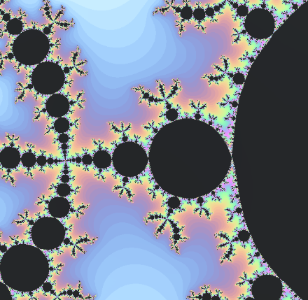

Fractals
The term "fractal" was first used by Benoit Mandelbrot in 1975. Mandelbrot based it on the Latin frāctus meaning "broken" or "fractured". Fractals extends the concept of theoretical fractional dimensions to geometric patterns in nature.
In mathematics there is no precise definition of fractals. The general consensus is that theoretical fractals are infinitely self-similar, iterated, and detailed mathematical constructs having fractional dimensions, a generalised notion of euclidean dimension that can be applied to such objects. Fractals are of particular relevance in the field of chaos theory, since the graphs of meaningful chaotic processes are fractals.
Both paintings in our exhibition aims to illustrate some of the above mentioned properties of Fractals. These fractals are a Julia set and a 3D Menger sponge. Notice that while zooming a Julia set you will find a Mandelbrot set (see picture below) in a sufficiently small portion of the painting.

The amount of information available on the literature and web on fractals is endless. Our intention is just to give a starting point and to include a non-exaustive literature list for diving in the fascinating world of fractals.
Fractals and Geometry
The concept of fractals has been inspiring many artistic works and has direct applications, for example, in the game industry to generate object shapes present in nature. Geometric Measure Theory, a branch of mathematics to study the geometric properties of sets - extending the euclidian notions of lines, surfaces, volume and dimension - provides a framework to study properties of fractals. In many mathematical theories, fractals are used as examples and counterexamples to illustrate the generality and consistency of concepts that are created.
Follow-up
-
Jos Leys gallery (not limited to fractals)
- Mathematical Imagery Fractal Foundation
- Educators' Guide
- Benoit Mandelbrot's TED talk Fractals and the art of roughness
- About Fractals MIT videos
- Benoit Mandelbrot's TED talk Fractals and the art of roughness
- Benoit Mandelbrot's biography Encyclopedia.com
Fraktaalit
Nimitystä "fraktaali" käytti ensimmäisen kerran Benoit Mandelbrot vuonna 1975. Nimi tulee latinan sanasta
frāctus, joka tarkoittaa rikottua, murskattua, särjettyä. Fraktaalien tutkimuksessa yhdistetään teoreettinen murtoluku-ulotteisen avaruuden käsite luonnossakin esiintyviin geometriseen kuvioihin.
Matemaatikot eivät ole täysin yksimielisiä siitä, mikä täsmälleen ottaen on fraktaali.
Yleisesti hyväksytään kuvailu, että fraktaali on äärettömästi itseään toistava ja äärettömän yksityiskohtainen matemaattinen rakenne, jonka ulottuvuus ei ole kokonaisluku.
Tällainen on mahdollista, sillä matematiikassa sana 'ulottuvuus' tarkoittaa jotain yleisempää kuin Euklidiseksi kokemassamme arkitodellisuudessa, jossa
ajattelemme ulottuvuutta lukuna 1, 2, tai 3 (tai mahdollisesti 4, 5, ...). Kaaoksen eli sekasorron teoreettisessa kuvailussa fraktaalit ovat tärkeässä asemassa, sillä kaaottisten järjestelmien matemaattiset kuvailut monesti ovat fraktaalisia.
Fraktaalit ovat innoittaneet taiteilijoita ja poikineet sovelluksia matematiikan ulkopuolelle. Esimerkiksi peliteollisuudessa niiden avulla luodaan luonnossa esiintyviä muotoja.
Molemmat näyttelymme teokset pyrkivät ilmentämään jotakin yllä mainituista fraktaalien matemaattisista ominaisuuksista. Teosten fraktaalit ovat nimeltään Julia-joukko ja 3-ulotteinen Mengerin pesusieni. Julia-joukkoon zoomatessa huomataan sen sisältävän Mandelbrotin joukon kopioita kaikissa mittakaavoissa. Alla oleva kuva havainnollistaa tätä.
Fraktaaleista on tarjolla loputtomasti tietoa kirjallisuudessa ja internetissä. Tarkoituksenamme on ainoastaan antaa alkusysäys ymmärryksen kehittymiselle ja tarjota lyhyt opas ensiaskelille fraktaalien kiehtovaan maailmaan.
Fraktaalit ja geometria
Geometrinen mittateoria on matematiikan haara, joka tutkii nimensä mukaisesti joukkojen mitattavia geometrisia ominaisuuksia. Tällaisia ovat esimerkiksi käyrän pituus, pinnan pinta-ala, kappaleen tilavuus, sekä yleisemmin joukon ulottuvuus. Kun joukot ovat fraktaalisia, nämä käsitteet vaativat huolellista tutkimusta eivätkä mittausongelmat ratkea klassisilla menetelmillä. Fraktaalit toimivat matematiikassa myös vasta-esimerkkeinä: ne osoittavat intuition vajavaisuuden ja täsmällisen logiikan tarpeen teorioiden muotoilussa.
Geometrinen mittateoria kuuluu perinteisiin suomalaisen matematiikan vahvuusalueisiin. Alan kehitykseen ovat vaikuttaneet merkittävästi esimerkiksi Lars Ahlfors ja Pertti Mattila, ja vielä nykyäänkin sen tutkimus Suomessa on erittäin aktiivista ja kansainvälisesti arvostettua.
Aiheesta muualla
-
Jos Leys gallery (not limited to fractals)
- Mathematical Imagery Fractal Foundation
- Educators' Guide
- Benoit Mandelbrot's TED talk Fractals and the art of roughness
- About Fractals MIT videos
- Benoit Mandelbrot's TED talk Fractals and the art of roughness
- Benoit Mandelbrot's biography Encyclopedia.com